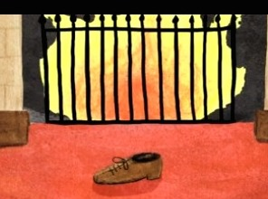

Kijk
Je hoeft natuurlijk niet persé het Sinterklaasjournaal 2014 te kijken. Oudere Sinterklaasjournaals zijn hier te bekijken. En er is nog veel meer te zien! Zo zijn er dit jaar zelfs drie sinterklaasfilms in de bioscoop te bekijken. Hier komt een groeiende verzameling gezellig ouderwetse Sinterklaasfilmpjes te staan… Kom regelmatig terug, iedere dag weer wat leuks!
Sinterklaasjournaal archief
Klik op een linkje en het journaal opent direct schermvullend…
Jaaroverzicht 2013
Jaaroverzicht 2012
Jaaroverzicht 2011
Jaaroverzicht 2010
Jaaroverzicht 2009
Jaaroverzicht 2008
Jaaroverzicht 2013
Jaaroverzicht 2012
Jaaroverzicht 2011
Jaaroverzicht 2010
Jaaroverzicht 2009
Jaaroverzicht 2008


Speelfilms
‚Gezellig ouderwetse’ Sinterklaasfilms. Klik op een link en hij wordt schermvullend getoond.
Sinterklaas en het Geheim van de Robijn (2004) 1:53:56
De jacht op het kasteel 2:19:09
De nieuwe club van Sinterklaas (2001) 2:16:36
De verdwijning van wagen 27 (2002), 2:26:56
Sinterklaas en het Geheim van de Robijn (2004) 1:53:56
De jacht op het kasteel 2:19:09
De nieuwe club van Sinterklaas (2001) 2:16:36
De verdwijning van wagen 27 (2002), 2:26:56
Wie was Sint Nicolaas?
Koekeloere Sinterklaas

Mijn schoen staat klaar (liedje, animatie 1:52)
Pietengekte! (2:20)
Koekeloere, Sinterklaas deel1 (15:00)
Koekeloere, Sinterklaas deel 2 (15:00)
Koekeloere, Sinterklaas deel 3 (15:00)
Pietengekte! (2:20)
Koekeloere, Sinterklaas deel1 (15:00)
Koekeloere, Sinterklaas deel 2 (15:00)
Koekeloere, Sinterklaas deel 3 (15:00)